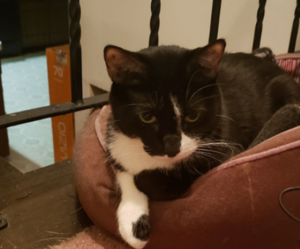

These are my fur babies!
This is Solo.
 This is my cat, Han Solo. We call him Solo for short. He is seven years old. His hobbies include sleeping, watching Cat TV on Youtube and chasing ghosts If you want to know what keeps him occupied for a couple of hours, the video is available below.
This is Oreo.
 Oreo is the newest addition to our family. He is almost a year old, so he's still a kitten.
His hobbies include meowing for food, meowing for attention, and messing with Solo.
Oreo is the newest addition to our family. He is almost a year old, so he's still a kitten.
His hobbies include meowing for food, meowing for attention, and messing with Solo.
My history with cats.
I always wanted cats since I was a little girl and we used to live in apartments so we could never get one. Until we moved into our first house then we were able to get two kittens name Storm and Dash. Stormie ran away when he accidently got out after two years. Dashie died at the age of 12 of cancer. At this point, we had my Aunt's cat Ptah (named after an Eyptian god) and Solo. Then, Ptah died at the age of 17 of cancer. When my babies leave me, it really hurts hard but I want to adopt and love as many cats as possible so I don't let the pain win over my love of cats.
Reasons cats are the best
- They are soft and snuggly
- Independent
- They are affectionate but not needy
- Easy to clean after
- They don't require walks
- And they purr!